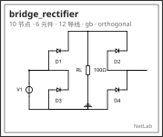
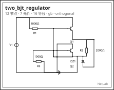

按 S7 验收要求，请对照两张整图检查：符号外形、pin 连接、junction/crossing、标签不压线、手工折点保持。结构 oracle：*.structure.json；符号对照：symbol_contact_sheet.html。
节点 10 · 元件 6 · 导线 12 · junction 3 · crossing 0 · 标签 7 · 不支持 0 · 警告 0

节点 12 · 元件 7 · 导线 16 · junction 5 · crossing 6 · 标签 10 · 不支持 0 · 警告 0

签收人：__________ 日期：__________ 备注：____________________